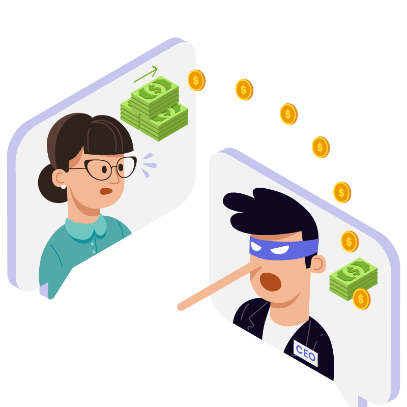

Social Engineering
Social Engineering is the malicious act of tricking a person into doing something by messing up his emotions and decision-making process.
Social engineering attacks typically involve some form of psychological manipulation, fooling otherwise unsuspecting users or employees into handing over confidential or sensitive data. Commonly, social engineering involves email or other communication that invokes urgency, fear, or similar emotions in the victim, leading the victim to reveal sensitive information, click a malicious link, or open a malicious file.
